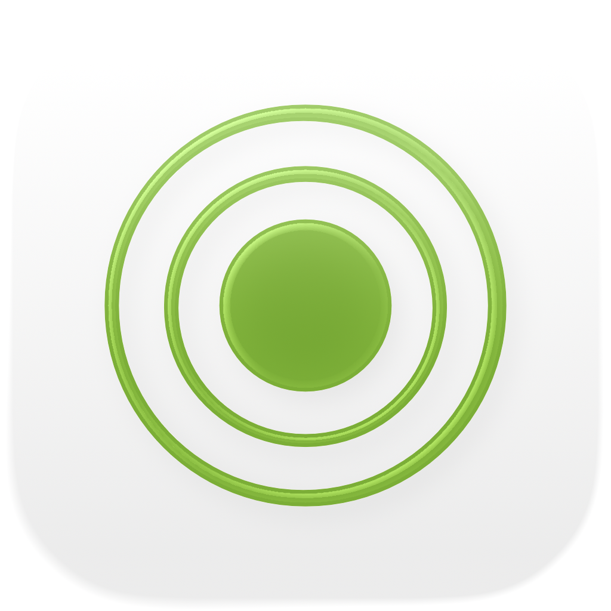

Modes iOS
A hands-on music theory lab for iPhone and iPad. Whether you're writing a song, preparing for a lesson, or exploring new harmonic territory, Modes gives you instant access to scales, chords, voicings, and modulation paths — all in one beautiful, distraction-free interface.
- Scale & Chord Finder with MIDI + touch keyboard
- 61 scales · 21 chord types · 8 voicing families
- Shared Notes, Shared Chords, Borrowed Chords
- Interactive Circle of Fifths + Circle of Thirds
Screenshots
Includes light and dark screenshots that follow the website theme.


Features
- Scale & Chord Finder: Play notes on the interactive multi-octave keyboard or connect a MIDI controller. Modes identifies the chord you're playing in real time: major, minor, diminished, augmented, extended, suspended, and more. It ranks every matching scale by note coverage. Filter results by scale category (diatonic, melodic minor, harmonic minor, pentatonic, bebop, symmetric, world, and more) to zero in on the sound you're after.
- 61 Scales & Modes: From the seven diatonic modes through melodic minor, harmonic minor, double harmonic, Neapolitan, bebop, pentatonic, blues, whole tone, diminished, augmented, and world scales like Hirajōshi, Kumoi, In Sen, Persian, and Enigmatic. Every scale is spelled out with interval tokens and highlighted on the keyboard.
- Notes in Key: Pick any root and scale to see every in-key note highlighted across two octaves. Instantly visualise which notes belong and where the root sits.
- Scale Chords: Generate diatonic triads or sevenths for every degree of your chosen scale. View roman numerals, chord names, harmonic function badges (tonic, subdominant, dominant, and 30+ detailed labels), and voiced keyboard renderings, all aligned for easy comparison.
- 8 Voicing Types: Build chords in tertian, sus2, sus4, sixth, add, quartal, quintal, and power voicings. Choose from triads up to thirteenths, with every extension automatically labelled.
- Shared Notes & Shared Chords: Compare any two keys side by side. See which notes overlap, which are unique, and which chords both keys share. Essential for smooth modulation and reharmonisation.
- Borrowed Chords: Analyse your key for native diatonic chords alongside every borrowed option from parallel modes, grouped by source mode. Discover fresh harmonic colour without leaving your tonal centre.
- Circle of Fifths: Interactive dual-ring circle (major outside, natural minor inside). Tap a sector to retune the key. See dominant, subdominant, relative, parallel, and nearby key relationships at a glance, with modulation difficulty badges and key-signature details.
- Circle of Thirds: Explore chromatic mediant relationships on a diminished-cycle diagram. Major and minor buttons for every pitch class reveal mediant, relative, and parallel connections. Perfect for cinematic and neo-Riemannian modulation planning.
- MIDI Support: Connect any class-compliant MIDI keyboard or controller. Played notes merge with on-screen taps for seamless detection.
Designed for Musicians
- Runs entirely offline — no account, no ads, no tracking
- Dark-mode aware interface
- Adaptive layouts for iPhone and iPad
- Enharmonic spelling: automatic, sharps, or flats
- Pinch-to-zoom keyboard from 1 to 9 octaves
Whether you're a producer sketching chord progressions, a guitarist learning modes, a pianist studying jazz harmony, or a student preparing for theory exams, Modes puts deep music theory at your fingertips.
Music Theory Coverage
A complete reference of every scale, mode, chord, voicing, and interval available in the app.
Scales & Modes 61 Total
Major Modes (Diatonic)
Melodic Minor (Jazz Minor) Modes
Harmonic Minor Modes
Double Harmonic Minor (Hungarian Minor) Modes
Harmonic Major
Neapolitan Minor Modes
Neapolitan Major Modes
Bebop
Pentatonic & Blues
Symmetric & Synthetic
Japanese Pentatonics
World / Other
Chords
Detected Chord Types 21
21 detected chord types with automatic extended-tension detection (9th, 11th, 13th shown as add9, add11, add13 when no 7th is present).
Chord Qualities (Builder) 6
Chord qualities available in the builder with Roman numeral analysis.
Chord Voicings 8 Types
From stacked-thirds tertian voicings through quartal and quintal stacks, with triad through thirteenth sizes.
Intervals, Harmonic Series & Analysis
All 12 chromatic intervals with inversions, a 16-harmonic overtone series, full circle-of-fifths navigation across all keys (sharp and flat spellings with automatic/manual enharmonic spelling), and 32 harmonic-function labels spanning tonic, subdominant, and dominant families.